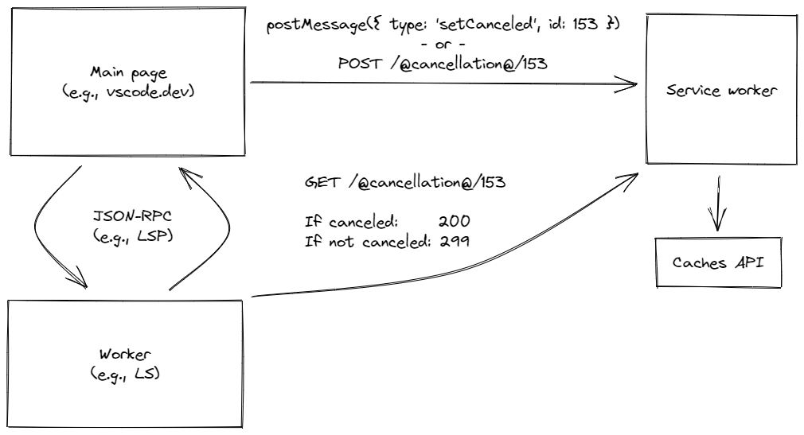

This is a proof-of-concept for cancellation using service workers. It works by having the service worker
intercept requests to the URLs /@cancellation@/*, which effectively turns the service worker
into an HTTP server.
On the worker side, a synchronous HTTP call can be used to check for cancellation, which allows
isCancellationRequested checks to be made without waiting for a cancellation message to be read
from the incoming stream (which may not be possible if the current operation is synchronous.)
The function to check for cancellation looks roughly like:
function isCancellationRequested(id: rpc.CancellationId): boolean {
const request = new XMLHttpRequest();
request.open('GET', `/@cancellation@/${id}`, /* async */ false);
request.send();
return request.status === 200;
}
The code for this page lives here.
Below is a console log of the page and a worker communicating over JSON-RPC, making and handling a few requests to a number adder handler.